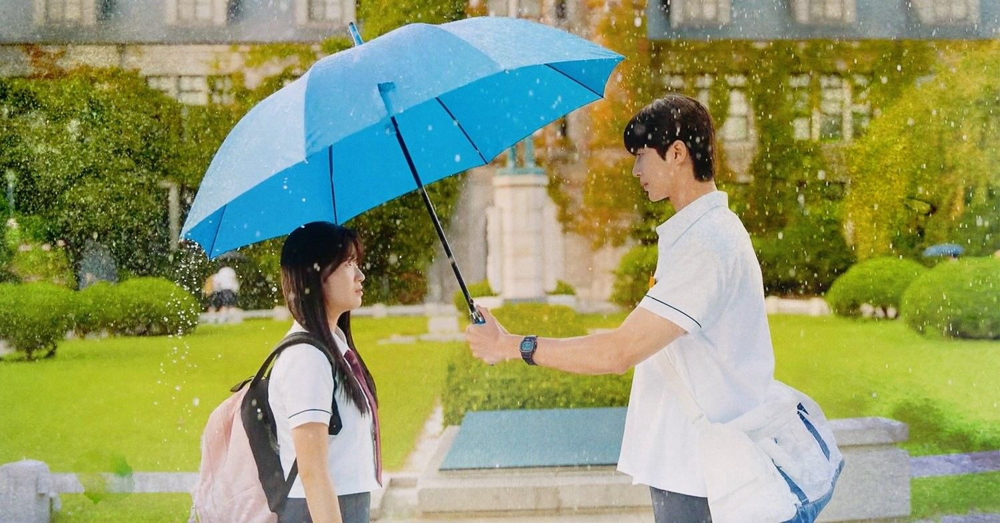
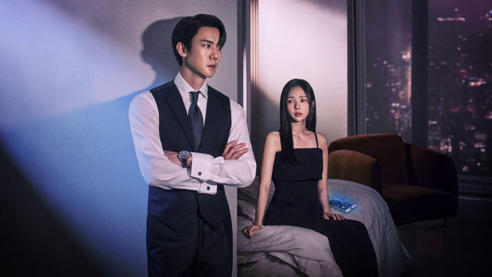
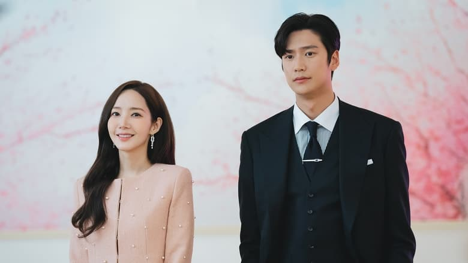

-

- 
- 
-

- 
-

The Best K-Dramas Of 2024, According To TIME Magazine
K-Dramas have taken over global audiences in the past few years, bringing unprecedented attention to the Korean entertainment industry from international media publications. Recently, TIME magazine published a list of the top 10 K-Dramas that were released and concluded airing in 2024, ranking them based on their content and popularity. Here are the shows that made it to the list:
10. Mr. Plankton
The Netflix series was praised by TIME for braving to defy the security of a “happy ending” to deliver a stronger impact on its audiences. The magazine wrote, “Unlike some series on this list, Mr. Plankton doesn’t end with a miracle that sees a couple’s love defying even death, and it’s stronger for it.”
9. Deaths Game
According to TIME, the show’s writer, Ha Byung Hoon, “made this tale about the preciousness of life, as learned by one man, into an action drama sum even greater than its original source material.”
8. Marry My Husband
The Park Min Young-starrer got a stellar review from TIME for its perfect execution of a cathartic plot. “This series may not be as thematically complex as some of the other K-dramas on this list, but, in this revenge drama’s case, that straightforward quality is its greatest strength,” the magazine noted.
7. Pyramid Game
The drama created quite the buzz for its star-studded cast, including WJSN‘s Bona, Single’s Inferno fame Shin Seul Ki, and Jang Da Ah (sister of IVE’s Wonyoung). But it made its way to the TIME list thanks to its grappling storyline and a fresh take on game-centric plots.
6. The Judge from Hell
Park Shin Hye’s glorious portrayal of the anti-hero, mixed with a fun supernatural plot, earned the show its spot on the list. TIME writes, “The Judge From Hell proved just how much fun a supernaturally silly, well-executed TV series can be, especially for American viewers who might miss shows from the heyday of networks like The CW.”
5. The Atypical Family
The Netflix drama received high praises for its thoughtful portrayal of “trauma, healing, and family” through a quiet domestic narrative, integrating superhero lore. TIME, however, criticized the drama’s decision to “put thin actress Claudia Kim in a fatsuit instead of casting a fat actress in the role of Bok Dong Hee.”
4. A Shop for Killers
In a nutshell, TIME’s verdict about the drama read: “Expertly acted, stylishly shot, and perfectly paced, A Shop For Killers is a—forgive me—killer example of the diversity of K-drama genre offerings.”
3. Love in the Big City
The K-Drama received high praise for its artful representation of a humane queer character and an uncompromising storytelling. “This TV drama adaptation could have been bad and still represented a major victory for Korean television and its depiction of the queer experience. Instead, it’s one of the best K-dramas of 2024,” TIME concluded.
2. Jeongnyeon: The Star is Born
An already critically acclaimed drama, Jeongnyeon’s inclusion in this list is hardly a surprise. While TIME acknowledged the criticism against the erasure of the explicitly queer storylines and characters from the source material, it concluded that the show “remains an inherently queer, women-centric world that felt like nothing else on television in 2024.”
1. Lovely Runner
As the top name on the list, the show’s strengths, according to TIME, were its soundtracks and the well-rounded plot.
"Most of the best melodrama filmmakers…understand how vital a tool soundtrack can be for heightening viewers’ emotional catharsis, helping us identify and empathize with what the characters are going through. This is the power of a good melodrama soundtrack, and the many people behind the Lovely Runner OST understood the assignment."
- Kayti Burt TIME
Some other K-Dramas that secured honorable mentions include Queen of Tears, No Gain No Love, The Trunk, and Flex Cop, among others.